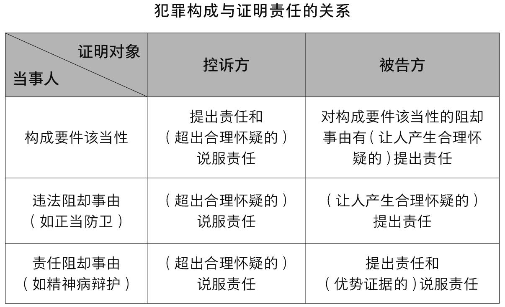

2020年12月，重庆女子刘某会凌晨锤杀丈夫一案引发讨论。
检方指控，2020年7月8日23时至9日凌晨3时许，重庆梁平区45岁女子刘某会的再婚丈夫蒋某银欲性侵其女儿龙某，被刘某会制止。刘某会遭蒋某银殴打。4时许，刘某会持铁锤多次击打俯卧在床上的蒋某银，致其死亡。刘某会被诉故意杀人。[37]
“该女子是否构成正当防卫”成为庭审焦点。而问题的关键在于，死者蒋某银在案发当时是否已经睡着？如果还未入睡，不法侵害就仍然处于正在进行中，刘某会的行为就可能论以特殊防卫，不构成犯罪。但如果蒋某银已经睡着，那么不法侵害已经结束，刘某会的行为可能就属于事后防卫。
当然，事后防卫并不必然属于故意杀人，如果出现认识错误，属于假想防卫，也可能以过失或意外事件论处。控辩双方对于死者是否睡着争辩不休，有学者认为如果公诉方没有足够证据证明死者蒋某银在案发当时已睡着，即不法侵害确实已经结束，就应作出有利于被告人的认定。
对于这种观点，学界也不乏质疑的声音。这里涉及正当防卫的证明责任的问题。证明责任一般可分为提出责任与说服责任。前者指刑事诉讼的当事人提出证据使自己的主张成为争议点的责任，后者则指主张一方提出证据说服审判者自己的主张为真的责任。法律问题不可能像数学公式那么精准。
当前，关于证明责任分配的原则和标准在世界范围都存在争议：
第一种是犯罪构成标准。这种标准认为控辩双方都应承担提出责任与说服责任。这种标准主要盛行于普通法系，尤其是美国。
普通法系的犯罪构成理论是一种双层结构，包括本体要件与辩护要件，前者包括客观行为和主观意图，后者包括各种辩护事由，如正当防卫、认识错误、精神病等。这种犯罪构成理论是一种入罪与出罪的二元对立模式，其最突出的特点就是充分利用民间司法资源对抗国家的刑罚权，发挥被告人及其辩护人的积极性，在动态中实现国家权力和个人自由的平衡。
控诉方对于本体要件要承担两种证明责任。首先，控诉方必须对本体要件的每个要素提出相应的证据；其次，为了达到对被告人定罪的目的，其证明标准还应达到超出合理怀疑的程度。对于辩护理由，普遍认为应当由被告方承担提出证据责任。被告方须先行提出存在辩护理由，并提供相应的证据，如证明行为是正当防卫等。
当然，被告方所提及的证据只要让人相信控诉方关于本体要件的证明存在合理疑点即可，也即引起合理怀疑。如果他不提出相应的证据而仅提出申请，法官就不会将此主张提交陪审团裁决。
比如张三在光天化日下杀人，最后他辩解说：“我以为对方是只猪。”这种认识错误的辩解太过荒谬，根本没有达到引起人合理怀疑的程度，法官根本就不会考虑这种辩解。但如果张三的辩解是：“我当时在猪圈旁边走路，有只猪拱我，我非常生气，拿石头把猪砸死了，后来才发现是个披着猪皮的人在猪圈里面体验生活。”如果存在相应的事实，这个辩解就可能达到了合理怀疑的程度，那么这个辩解就可以作为辩护理由供法官考量。
对于辩护理由的说服责任，则存在较大的分歧，有些司法区认为，被告方必须提出优势证据证明这些辩护理由。用不太精准的百分比来说的话，如果说合理怀疑大概是30%的可能性，那么优势证据就得是51%的可能性。但也有不少司法区认为，被告方无需承担说服责任，换言之，只要被告提出存在正当防卫的辩护理由，这种辩护理由达到了让人产生合理怀疑的程度，那么就应该由公诉机关承担超出合理怀疑的说法责任来反驳辩方的理由。
第二种标准是无罪推定原则。这是刑事诉讼中的基本原则，指任何人未经法定程序并依实体法被确定有罪以前，都应当被推定为无罪。
根据无罪推定标准，控诉方须承担被告人有罪的证明责任，控诉方应证明被告人道德上可谴责性的所有要素。无罪推定标准反对区分本体要件和辩护理由，认为有些辩护理由与犯意和道德上可谴责性的关系十分密切，要求被告人承担说服责任违反无罪推定原则。
无罪推定标准在大陆法系比较普遍，比如德国，其犯罪构成由构成要件该当性、违法性和有责性三个依次递进的结构组成。控诉方不仅对构成要件该当性负有提出责任和说服责任，同时如果由该当性推定成立的违法性和有责性出现疑问时，不论这种疑问的产生是因被告人的主张和举证引起还是因控诉方提出的证据而引起，都应当由控诉方承担说服责任，如果控诉方不能排除这些疑问，法官就应作出有利于被告人的判决。
这两种标准都存在一定的问题。犯罪构成标准当前所面临的困境主要在于本体要件与辩护理由的界分并不清晰，导致证明责任在分配上的困惑。从表面上看，本体要件是肯定性的入罪要件，辩护理由是否定性的出罪要件，黑白之间，泾渭分明。然而，在具体操作时两者往往存在中间地带。由于本体要件和辩护理由本身界限模糊，如果认为辩方需要承担辩护理由优势证据的说服责任，那么证明责任就可根据情势任意分配。
比如被告人不在场，这似乎是对本体要件的否定事由，那它是本体要件，还是辩护要件？又如认识错误，这将导致犯罪故意的排除，这是本体要件，还是辩护要件？这都不无争议。
因此，立法者完全可能将本体要件贴上辩护理由的标签任意分配证明责任。比如，立法者既可以将强奸罪中“被害人的不同意”作为本体要件，从而由公诉机关承担超出合理怀疑的说服责任，也可以将其视为辩护理由，由被告方提供优势证据对此加以证明。甚至可以将谋杀定义为造成他人死亡的行为，于是让被告方承担证明他不是出于恶意之辩护理由的说服责任。
正是因为这种困境，所以无罪推定标准反对区分本体要件和辩护理由。不少原来采取犯罪构成标准的国家，如普通法系的英国和加拿大都基本上放弃了犯罪构成标准，倒向了无罪推定标准，认为对于辩护理由被告方只负有提出责任，而不应承担说服责任。
根据无罪推定标准，控诉方必须承担被告人有罪的证明责任，被告方无需承担任何要素的说服责任。从表面上看，在与犯罪构成标准的对决中，无罪推定标准似乎大获全胜，然而现实并非如此。首先，无罪推定标准存在大量的例外规则，也即所谓的举证责任倒置。比如加拿大和英国虽然已经倒向无罪推定标准，但法律和判例中却仍有大量的例外规则，要求被告人承担说服责任。如英国在2002年通过兰伯特案件（Lambert）和卡勒斯案件（Carass）确立了无罪推定标准，但如一年后的《性犯罪法》（Sexual Offences Act, 2003）又规定，在法定强奸罪中被告方不仅负有提出责任，还要承担说服责任，被告方必须提供优势证据说服陪审团相信他以为女方年龄已经达到16岁。
其次，无罪推定标准让控诉方承担的举证责任过重，往往矫枉过正，导致立法者取消某种辩护理由，这对于被告方更为不利。比如，在性侵犯罪中，得到女方同意是一种辩护理由，有些地方为了规避控诉方的证明责任，而将此罪完全视为暴力犯罪，只要行为人实施了暴力行为，性行为就构成犯罪，得到女方同意不再视为一种辩护理由。这正如美国最高法院在帕特森案所指出的：正当程序条款不能让国家置于这样的选择：或者抛弃这些辩护理由，或者为了取得有罪判决而反证辩护理由不存在。[38]
普通法系之所以想撇开传统的犯罪构成标准，就在于如果辩护理由都由辩方承担优势证据的说服责任，有时对辩方会非常不利，甚至导致辩护理由在事实上不再存在。但是如果按照大陆法系的做法，彻底地倒向无罪推定，辩方无需承担任何辩护理由的说服责任，那么又可能矫枉过正，导致立法机关干脆在法律上取消某种辩护理由。
比如，为什么很多国家不承认法律认识错误这种辩护理由？就在于如果认可它的存在，会让控诉方承受无力证明的重担。一种稳妥的方法是在两种标准中求取一个平衡点。合理的证明责任标准要同时符合诉讼公正和效率的要求，兼顾惩罚犯罪与保障人权的诉讼使命。
首先，它应当合理地区分本体要件和辩护要件，尽可能地避免两者之间存在过多的模糊地带。其次，能吸收无罪推定标准的合理成分，避免其不足。根据无罪推定标准，与犯罪有关的要素原则都应由控诉方承担证明责任，被告方只对例外事由有一定的证明责任。同时，控诉方按照理性的客观一般人的标准证明被告人有罪，被告人主观所独知的个别化事由应当由其自身承担证明责任。
因此，犯罪构成理论应当体现这种原则与例外、客观与主观的层次性要求，从而合理分配证明责任。借助大陆法系的递进式犯罪构成理论可以弥补普通法系犯罪构成标准的不足。这种犯罪构成理论由构成要件该当性、违法性和有责性三个依次递进的结构组成，不仅能够比较清晰地区分本体要件和辩护要件，还能体现证明责任所需要层次性安排。
行为一旦具有构成该当性，就可推定具备违法性和有责性。控诉方通常只对犯罪构成该当性承担证明责任而无需证明违法性和有责性。只有当诉讼中出现了或者被告方提出了违法阻却事由或责任阻却事由可能存在的证据，使得违法性和有责性的推定出现了疑点，控诉方和被告方才可能出现证明责任分配的问题。
具体而言，当行为符合构成要件该当性，就推定具有违法性和有责性，因此就要从反面来看是否存在违法阻却事由，如果行为不具有违法性，也就无需再进行下一步判断。构成要件该当性和违法性的判断是一种客观一般人的判断。
如果行为具备构成要件该当性、违法性，那么就要深入行为人的内心深处，进行有责性的判断，也即要判断行为人是否有责任阻却事由，这种责任判断显然是一种主观化的个别判断。同时，大陆法系对于犯罪排除事由分为违法阻却和责任阻却，正好对应于普通法系的辩护理由的正当化事由和可得宽恕事由的区分。
违法阻却和责任阻却没有必要采取同样的证明责任标准，毕竟前者是一种一般化判断，后者是一种个别化判断，需要考虑行为人的个别化状况。对于前者认定而言，控诉机关有优势，但是对于后者的认定，辩方自身有优势。
总之，法律永远是一种平衡的艺术，如果辩方无需承担任何辩护理由的说服责任，这对控方也可能是一种不可能完成的任务，物极必反的结果反而会导致辩护理由的取消，给辩方带来更大的不利。因此，稳妥的做法是将辩护理由区分为违法阻却和责任阻却，辩方对于违法阻却事由没有说服责任，只要承担合理怀疑的提出责任，证明责任就转嫁至控方。但是对于责任阻却，辩方依然需要承担优势证据的说服责任。

回到本文最初的案件，对于死者是否睡着，辩方只需要提出让人产生合理怀疑的证据，主张蒋某银仍然处于清醒状态，如果公诉方没有超越合理怀疑的证据反驳辩方的主张，那就应作出有利于被告人的认定，认为不法侵害仍在继续，从而认定本案属于正当防卫。
人类事务千变万化，人类理性的有限性决定了法律所追逐的正义是有限的。法律的正义不可能是完美的正义，有时追求最优选择反而会事与愿违，甚至适得其反。我们希望本案在现行的法律的框架内能够寻找到一个相对较优的选择，让民众朴素的直觉与法律的专业判断不会相去甚远。
（本文节选自拙文《犯罪构成与证明责任》，原载《证据科学》2016年第4期）